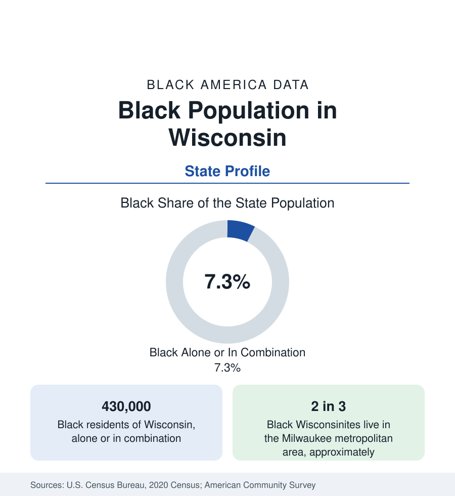

Black Census
Black Population in Wisconsin: Milwaukee's Weight
About 430,000 Black Wisconsinites — one in fourteen residents — with the large majority in Milwaukee, among America's most segregated metros. The census profile.

Wisconsin holds about 430,000 Black residents — Black alone or in combination — roughly one in fourteen of its people, with Black alone at about 360,000, or 6 percent. No state's Black population is more concentrated in a single metro: about two in three Black Wisconsinites live in greater Milwaukee, and the city of Milwaukee itself holds the majority of them. Wisconsin's Black data are therefore Milwaukee's data at state scale — including the segregation measures that have ranked the metro at or near the top of the national index for decades. This article profiles the population in the census record.
Milwaukee: The Concentration
The city of Milwaukee is roughly two-fifths Black — about 230,000 people — in a community formed late in the Great Migration (the city's industrial recruitment peaked in the postwar decades) and confined by the era's housing machinery to the north side, where Bronzeville — along what is now Martin Luther King Jr. Drive — was its commercial heart. The modern Black Milwaukee extends across the entire north and northwest of the city and into the inner suburbs, a contiguous urban landscape whose tracts record the metro's defining statistics: a Black-white dissimilarity index among the highest of any large metro in the nation, Black poverty rates at the difficult end of this section's city tables, and — in the same surveys — a substantial homeowner class in the northwest neighborhoods and the region's Black professional infrastructure in its churches, media, and Milwaukee Public Schools and health-system workforces. The metro's Black population, about 280,000, suburbanizes slowly into Waukesha, Washington, and Racine counties' edges.
The Rest of the State
Beyond Milwaukee, Black Wisconsin is a set of small-city communities. Racine, thirty minutes south, is roughly a quarter Black — a manufacturing city whose Black community dates to the foundry era. Kenosha, at the Illinois line, is roughly an eighth Black and functions increasingly as a Chicago-Milwaukee corridor city. Madison, the capital and university city, is roughly 7 to 8 percent Black — a small, comparatively affluent community whose achievement data in the state education tables show the nation's pattern (strong overall metrics, wide internal gaps) in miniature. Beloit, at the Illinois line, is roughly a third Black in its small-city scale. Green Bay, Appleton, Eau Claire, and the rural counties record shares in the low single digits; the state's northern two-thirds are among the least Black regions in the Midwest.
Institutions and Indicators
Wisconsin has no HBCU, and its Black higher education runs through the University of Wisconsin system — Milwaukee's campus is the state's most diverse research university — and Marquette, alongside the technical colleges that carry much of the workforce pipeline. The state's Black indicators present the concentration's consequences statistically: because Milwaukee dominates, Wisconsin's Black income, poverty, health, and household measures track one metro's conditions, and its state rankings on Black outcomes land at the difficult end of national tables despite the state's overall prosperity rankings — the standing demonstration, in one state file, that a population's data are made where it lives. The foreign-born share is small, with growing African communities in Milwaukee and Madison visible in recent survey years.
Composition and Change
The estimates describe slow growth concentrated in the Milwaukee suburbs and Madison, decline in the older manufacturing cities' Black counts with their totals, and a Black age structure in Milwaukee younger than the state's — natural increase doing more of the growth work than migration in either direction. The suburbanization rate, the segregation indices, and the north side's housing data are the series the state's demographers publish against, all of them Milwaukee series in substance.
Reading the Wisconsin Numbers
Milwaukee's Black cultural infrastructure — its summer festival calendar, its Black media market, and the Harambee and Riverwest neighborhoods' institution-building — is documented in the city's own cultural surveys as among the densest per capita of any Black community its size in the Midwest, a qualitative layer the quantitative tables point toward without capturing.
Wisconsin teaches the concentration lesson at its limit: a state profile that is, in truth, one metropolitan profile and a set of footnotes. Two in three Black Wisconsinites share one metro's economy, schools, and housing market; the state figures should be quoted with Milwaukee named inside them, and the city profile in this section carries the detailed account.
More in Black Census
The Black Population of the United States: Size, Definitions, and Distribution
The Black population of the United States totals 52.8 million — 15.4 percent of the nation. How the Census Bureau defines and counts the population, and where it lives.
Black Median Household Income in the United States
Black median household income stands at $56,490 in the Census Bureau's annual income report — how the figure is measured, how it compares, and what drives it.
The Black Poverty Rate: Levels, Children, and the Long Trend
The official Black poverty rate is 17.1 percent — against 11.1 percent nationally and 7.7 percent for non-Hispanic White Americans. How poverty is measured and what the data show.
Source: U.S. Census Bureau, 2020 Census; American Community Survey; Population Estimates Program.